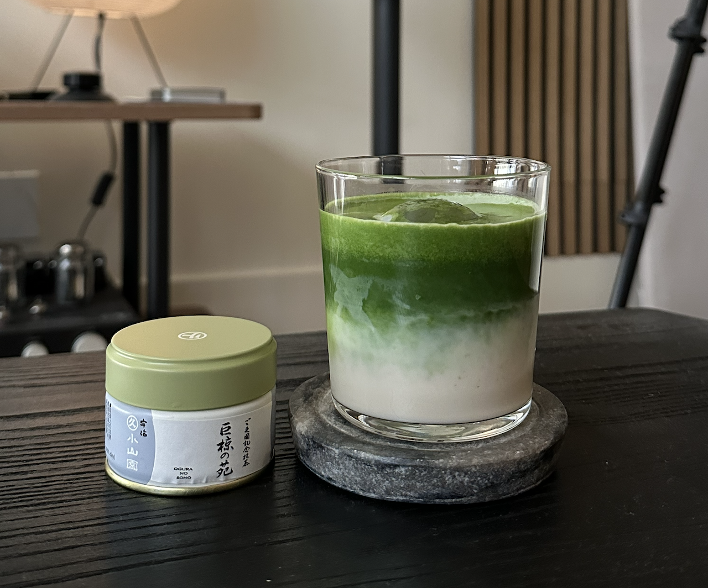

Matcha Wikipedia
Matcha is a finely ground powder made from specially grown green tea leaves. It is an important aspect of Japanese culture and has recently become popular worldwide for its unique flavor and vibrant color. This site introduces the history, preparation, and the rising demands of matcha.
